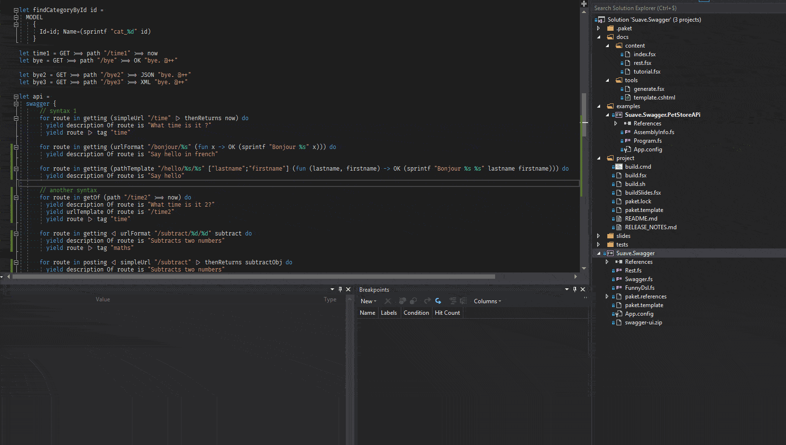

Suave.Swagger
Documentation
The Suave.Swagger library can be installed from MyGet:
PM> Install-Package Suave.Swagger
The Suave.Swagger library can be installed from Paket:
group Romcyber
source https://www.myget.org/F/romcyber/api/v3/index.json
nuget Suave.Swagger
What are Suave and Swagger?
- Suave is a F# lightweight web server principally used to develop REST APIs
- Swagger is a usefull tool helping to create interactive documentation, client SDK generation and discoverability.
Why use Swagger?
- Generate beautiful API documentation, including a UI to explore and test operations.
- Improve productivity during development.
- Make it possible for API users to generate clients.
Project
This is a proof of concept to document Suave web services with Swagger.
Swagger UI is embedded in resources and a WebPart serving it is automatically added.

Contributing and copyright
The project is hosted on GitHub where you can report issues, fork the project and submit pull requests. If you're adding a new public API, please also consider adding samples that can be turned into a documentation. You might also want to read the library design notes to understand how it works.
The library is available under Public Domain license, which allows modification and redistribution for both commercial and non-commercial purposes. For more information see the License file in the GitHub repository.